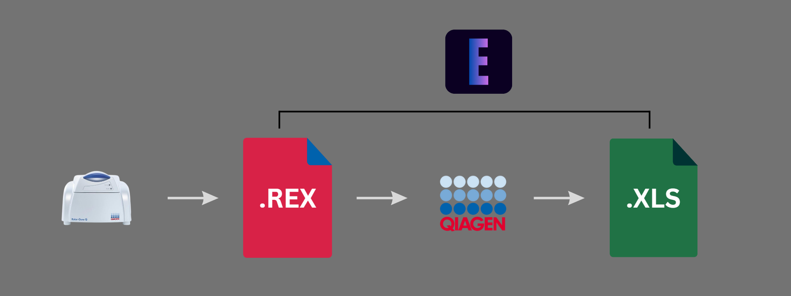
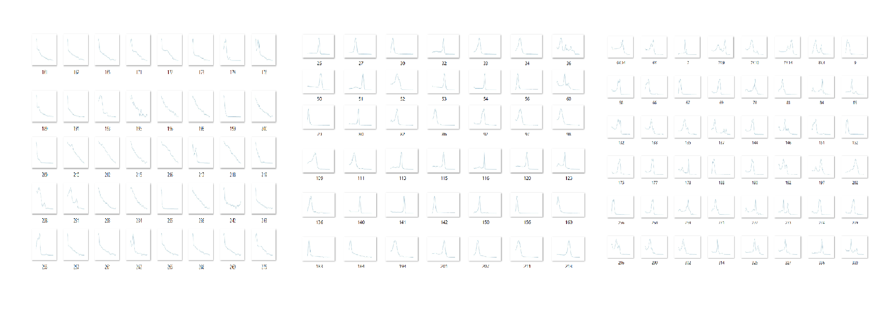
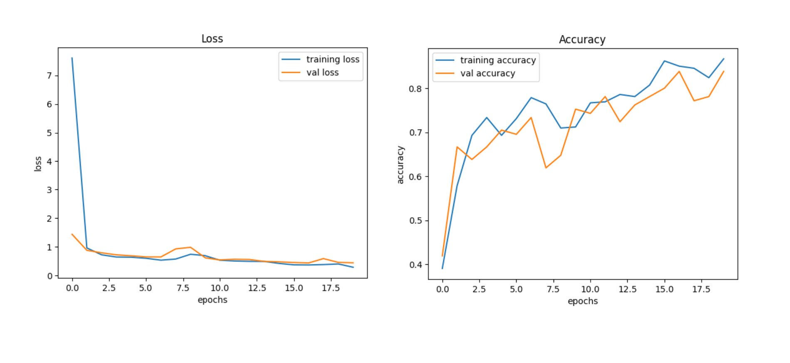
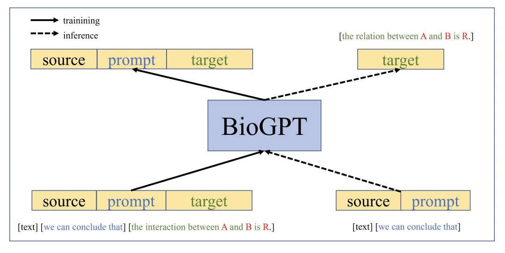

AI in Biotechnology
An AI-based framework and data-driven methodology for post-PCR High-Resolution Melting Analysis (HRMA)

Empowering Molecular Analysis and Diagnosis with AI
AI in Biotechnology paves the way for an innovative framework for automated analysis of HRM data. By harnessing cutting-edge computational techniques such as Machine Learning, Signal Processing, and Deep Learning, this project enables predictive analysis of HRM data from clinical samples. It has been meticulously designed and discussed the fundamental principles for processing, analyzing, and interpreting HRM data for a representative set of molecular targets. This pioneering approach empowers technicians and clinicians with accurate reporting and enhances diagnostic capabilities. With "AI in Biotechnology," the field of molecular analysis and diagnosis is poised for a significant transformation. This project not only bridges the gap in molecular assays for disease detection but also ensures reliable and automated analysis of HRM data. By harnessing the power of advanced computational techniques, healthcare professionals can make faster, more accurate diagnoses, ultimately saving lives.
What is DNA Melting?
DNA melt signals are the important output of PCR experiments, as they provide
information about the characteristics of the amplified DNA. As the temperature increases, the
double-stranded DNA begins to denature into single-strand, and the DNA-binding dye will
dissociate from the DNA, causing a decrease in fluorescence. The temperature at which half of
the double-stranded DNA is denatured is called the melting temperature (Tm).
Each pathogen will be having different DNA melting temperatures and their respective
signals will also possess different shapes and sizes. Usually, DNA melting signals are in bell-shaped curve with peaks, which denotes the melting point or the melting temperature of the
DNA. Interpretation will be made through visual inspection, performed on such signal’s shape,
peaks, and size.
Signal Processing in DNA melting
To process the DNA melting signal, several techniques from signal processing can be used. For example, noise reduction techniques, such as filtering and averaging, can be used to remove random fluctuations in the signal and improve its accuracy. Signal processing techniques can also be used to extract features from the melting curve, such as the melting temperature, the shape of the curve, and the width of the transition region. These features can then be used to compare different DNA samples or to detect mutations and structural variations in the DNA molecule. Another important aspect of DNA melting signal processing is the use of mathematical models to describe the melting process. Signal processing techniques play a critical role in analysing and interpreting DNA melting signals, and can provide valuable insights into the properties of the DNA molecule and its interactions with other molecules.
Key Features
Components of the Project
The project has three major components for developing an AI-based framework for automated analysis, interpretation, and data management of High-Resolution Melting (HRM) data. These components include the data extraction tool called "EXTRACTOR," the feature engineering tool called "PyHRM" and the prediction tool called "Meltcurve Interpreter". The EXTRACTOR tool is used to extract data from the raw HRM files (for more details refer "Extractor" section in the project), while the PyHRM tool is used for feature engineering (for more details refer "PyHRM" section in the project), which involves extracting relevant features from the HRM data. Finally, the Meltcurve Interpreter tool uses predictive analytics and deep learning models to interpret the extracted features and predict the presence of the intended molecular target in a clinical sample tested (for more details refer "Meltcurve Interpreter" section in the project). These three components work together to develop an AI-based framework that can automate the analysis and interpretation of HRM data, allowing for faster and more accurate diagnosis of infectious diseases. With this framework, clinicians can make more informed decisions and plan the course of treatment for their patients.
Data Extraction
EXTRACTOR is a lightweight simple GUI-based application that extracts '.rex' files from the Qiagen's Rotor-Gene Q Software to the necessary '.xls' file. It's built for the users such as laboratory technicians and clinicians who handle and run PCR experiments especially in Qiagen's Rotor-Gene Q thermal cycler machine.
After the successful experiment ran in Rotor-Gene Q cycler, it produces the raw data and the users which can be only opened and analyzed via Qiagen's Q-Rex Software. If a specific run file (raw data) has to be exported into desired formats such as text(.txt), HTML Table(.html), XML(.xml), excel(.xls) given by the Qiagen Rotor-Gene Q-Rex Software. Here we automated the user role by our EXTRACTOR Software, by which you simply put the raw data file directory and desired directory to which the excel files are stored in your system, which saves time and not to burned out from this repititive task.

Feature Engineering, Pre-processing and Visualization
PyHRM is a Python-based library specifically designed for processing High Resolution Melting (HRM) data, particularly DNA melting signals. Its primary purpose is to extract various features from the data, such as "Melting Temperatures" (the temperature at which DNA strands dissociate), the "Take-off and Touch-down points" (the temperature at which the melting signal begins to rise and fall), "Peak prominences" (the prominence of individual peaks in the signal), and the "Area Under the Curve" (the integrated area under the melting curve). To accomplish this, PyHRM makes use of the powerful SciPy library for signal processing tasks. By leveraging SciPy's efficient algorithms for filtering, peak detection, and curve fitting, PyHRM ensures accurate and reliable feature extraction from the DNA melting signals. This ensures that the analysis results are robust and trustworthy. In addition to signal processing, PyHRM incorporates interactive visualization capabilities using the Plotly library. With Plotly, users can visually explore and analyze the DNA melting signals in an interactive manner. They can zoom in on specific regions of interest, pan across the signal, and inspect individual data points. This interactive visualization greatly enhances the user experience and enables a more comprehensive understanding of the HRM data. Moreover, PyHRM includes vision-based filtering to eliminate noisy signals and retain only genuine peaks with the aforementioned features. By applying this filtering technique, the library ensures that the analysis is based on reliable data, thereby improving the accuracy of the results obtained from the HRM data analysis using PyHRM. Overall, PyHRM provides a comprehensive and user-friendly environment for processing and analyzing HRM data. It combines the signal processing capabilities of SciPy with the interactive visualization offered by Plotly, enabling researchers to effectively explore and interpret DNA melting signals, and extract valuable features for further analysis and interpretation.
Vision Based Thresholding

Classifying genuine and non-genuine DNA melting signals is an important task in DNA
analysis and sequencing. Convolutional Neural Networks (CNNs) have been used to address
this problem by learning to automatically extract features from the melting signals and classify
them as genuine or non-genuine.
During training, the CNN is fed with a large dataset of labelled DNA melting signals, consisting
of both genuine and non-genuine examples. The network learns to differentiate between these
two classes by adjusting the weights of its filters through a process called backpropagation.
Once trained, the CNN can be used to classify new DNA melting signals as genuine or non-genuine. By the way using CNNs to classify genuine and non-genuine DNA melting signals
will be a promising approach.
To train a CNN model, to classify DNA melting signals of “Single Peaked”, “Double Peaked”
and “Noise”, necessary training images has to be generated and must be labelled accordingly.
ConvNets, or Convolutional Neural Networks, have shown promising results in DNA analysis,
particularly in the classification of DNA melting signals. They are able to automatically extract
relevant features from the data and learn to classify the signals based on these features. In the
context of DNA signal thresholding, ConvNets can be used to generate an image of the signal
based on provided coordinates. The image is then processed through the trained neural network,
which has learned to identify and extract specific features from the signal. The network's
feature maps, which are created during training, enable it to provide a probability distribution
indicating the likelihood that the signal belongs to a particular probability density function
93
(PDF). For example, the network might output a probability distribution indicating that the
signal is more likely to belong to the PDF of "Single Peaked" than to the PDF of "Double
Peaked" or "Noise". This information can be used to threshold the signal and separate genuine
signals from noise or other artifacts.

The Model has a validation accuracy of 83.81% and the training accuracy of 86.67%, which
looks like, the model doesn’t overfit to the data. Since it is a multiclass classification problem,
looking on the accuracy is not sufficient. The true accuracy of the model will be assessed by
looking on metrics like precision and recall. Furtherly, on combing both the metrics, f1 score
can be taken into consideration, as it is harmonic mean of both precision and recall, will
produce a significant and reliable result if the model truly performs good.

Meningitis
Meningitis is a serious infection of the meninges, the membranes covering the brain and spinal cord. It is a devastating disease and remains a major public health challenge. The disease can be caused by many different pathogens including bacteria, fungi or viruses, but the highest global burden is seen with bacterial meningitis.
Several different bacteria can cause meningitis. Streptococcus pneumoniae, Haemophilus influenzae, Neisseria meningitidis are the most frequent ones. Meningococcal meningitis can affect anyone of any age, but mainly affects babies, preschool children and young people. The disease can occur in a range of situations from sporadic cases, small clusters to large epidemics throughout the world, with seasonal variations.
Initial diagnosis of meningococcal meningitis can be made by clinical examination followed by a lumbar puncture showing a purulent spinal fluid. The bacteria can sometimes be seen in microscopic examinations of the spinal fluid. The diagnosis is confirmed by growing the bacteria from specimens of spinal fluid or blood, or by polymerase chain reaction (PCR).
Standards for Positive Samples
Machine Learning
Leveraging the developed components, data has been generated for the postive samples from the Meningitis panel and mapped with the target values. More than 100+ samples were
taken and extracted 800+ observation on each class, which contributes a total of 2500+ observations. This has been used to train a multiclass classification model using tensorflow
to classify unseen signals in future, into these recognised pathogen classes.
Negative samples will be omitted automatically, since the vision based filtering helps the analysis by mapping 0.0 to all the features, if the signals are
recognised as negative, as per the training.
=
The Model has a test accuracy of 85% and the training accuracy of 86.67%, which looks
like, the model doesn’t overfit to the data. Since it is a multiclass classification problem,
looking on the accuracy is not sufficient.
The true accuracy of the model will be assessed by looking on metrics like
precision and recall. Furtherly, on combing both the metrics, f1 score can be taken into
consideration, as it is harmonic mean of both precision and recall, will produce a significant
and reliable result if the model truly performs good
| Class | Precision | Recall | F1-Score | Support |
|---|---|---|---|---|
| 0 | 1.000 | 1.000 | 1.000 | 19 |
| 1 | 0.808 | 0.913 | 0.857 | 23 |
| 2 | 0.909 | 0.800 | 0.851 | 25 |
Work in Progress: Open AI Fine-tuning

Language Models can be put into picture for advanced interoperability. This can be acheived by creating custom data, especially text based documnets, that has conventional text used by microbiologists to interpret the signals. By the way the final result, that come from the trained ML model, can be further eloborated using a language model, which can give us more information on the signals through conversational text.
On the other hand BioGPT is a state-of-the-art language model designed specifically for applications in the field of biology and genetics. With its extensive knowledge of biological concepts and language understanding capabilities, BioGPT has the ability to provide text-based results for a model that classifies pathogens using DNA melting signal data. By utilizing the power of BioGPT, researchers and scientists can obtain descriptive and informative text outputs for their pathogen classification models. These text-based results can effectively communicate the findings and insights derived from the analysis of DNA melting signal data. BioGPT assists in generating clear and concise descriptions of the classification outcomes, allowing researchers to share their research outcomes and analysis with the scientific community or other relevant stakeholders.
